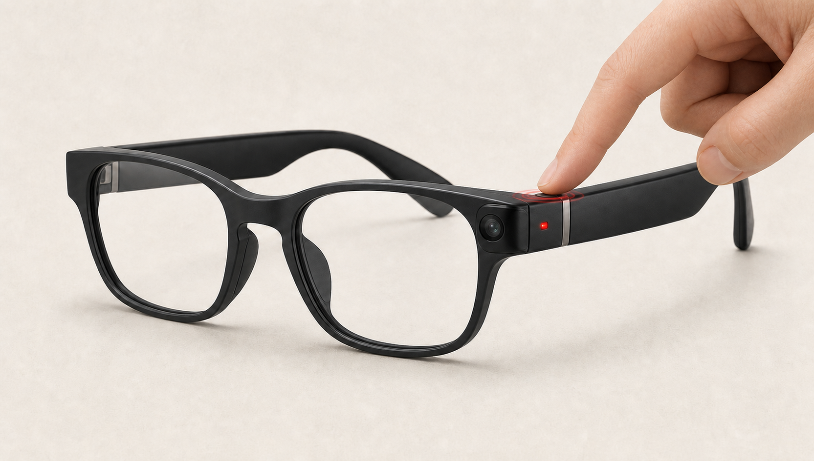

MY DAY · 7 月 18 日2 / 4 已确认
今天开始把一个想法做成真正的产品，也在普通的买菜和散步里慢了下来。
这是属于我的一天。所有内容默认私密，确认前不会用于生成家人近况卡。
先记录自己的生活。每天由你确认整理结果，再决定哪些部分可以让家人看到。
ilink 把我今天留下的内容整理成了 4 个生活片段。先确认它有没有理解对，再决定哪些值得和家人分享。
这是属于我的一天。所有内容默认私密，确认前不会用于生成家人近况卡。
确定先把记录、我的一天和家庭分享做成完整闭环。
天气很好，走完以后感觉比上午放松了一些。
决定硬件不在 Hackathon 演示，但保留未来接口。
吃完以后收拾厨房，给妈妈发了张新菜的照片。
这里收好我主动分享给妈妈和爸爸的近况。只有最终发送的卡片会出现在这里。
妈妈需要处理厨房水管；爸爸最近再次提到手机电池。两人都保持了出门活动。
妈妈开始固定去舞蹈课；爸爸出门散步更频繁，同时在考虑换手机；水管问题仍需要落实。
没有分享不代表异常。ilink 不会根据沉默、少记录或单次情绪自动推断风险。
选择一位家人，查看他主动确认并分享给我的生活近况。
管理设备、家人连接和每一条生活数据的边界。
不要求父母反复打开 App，也不持续录像。眼镜只在预设的生活时刻拍下一张照片，交给 AI 形成候选记录；当天由本人整理、确认，再决定是否分享。
